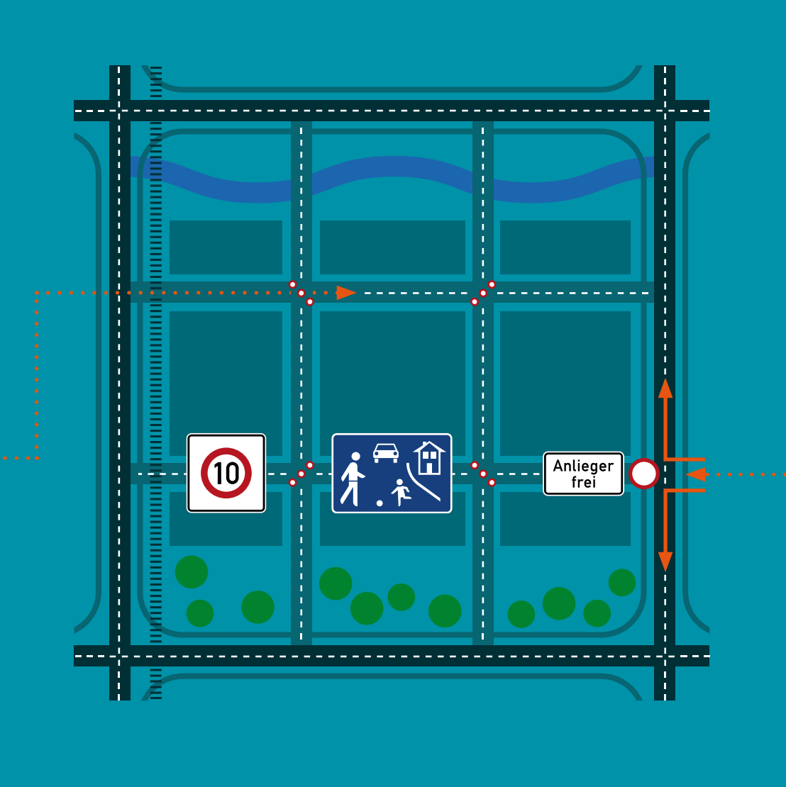

WAS IST EIN #KIEZBLOCK? // STEP 1
Ein #Kiezblock ist ein städtisches Quartier ohne Kfz-Durchgangsverkehr. Die Straßen im #Kiezblock gehören dem Fuß-, Rad- und öffentlichen Nahverkehr; Autos sind nur zu Gast. Alle Gebäude im #Kiezblock sind trotzdem für Rettungsfahrzeuge, Müllabfuhr, Lieferverkehr etc. erreichbar, nur eine durchgängige Querung mit dem Kfz ist nicht mehr möglich. Die übrigen (Wohn-)Straßen werden zu Grünflächen, Fußgängerzonen oder mit Radwegen und Straßenmöbeln versehen. Damit der Kfz-Verkehr nicht einfach auf den Nachbarkiez ausweicht, ist es entscheidend, angrenzende Quartiere bei der Gestaltung von #Kiezblocks zu berücksichtigen und in die Planung miteinzubeziehen.
INWIEFERN UTNERSCHEIDET SICH EIN #KIEZBLOCK VON EINEM KLASSISCHEN BERLINER WOHNVIERTEL? // STEP 2
Der Durchgangsverkehr wird mittels Einfahrtsperren am Kiezblock-Rand oder sog. Diagonalsperren innerhalb des Kiezblocks verhindert. Eine Diagonalsperre sind 5–6 Poller (oder ähnliche Absperrungen), die diagonal in einer Kreuzung aufgestellt werden, so dass der Kfz-Verkehr nur nach rechts bzw. nach links abbiegen kann; Fußund Radverkehr können weiterhin in allen Richtungen fahren. Werden Diagonalsperren oder Einfahrtsperren an wenigen strategischen Kreuzungen bzw. Einfahrten in einem #Kiezblock aufgestellt, so verlagern diese den Kfz-Durchgangsverkehr auf einfache und effektive Weise auf die Hauptstraßen. Stadtmöbel, wie Ruhebänke oder Spielgerüste, können aufgestellt werden.
Durch Schwellen kann der Kfz-Verkehr bei der Einfahrt in den #Kiezblock entschleunigt werden. An manchen Stellen können Einbahnstraßen diesem Zweck dienen. Ergänzt durch verkehrsberuhigende Elemente wie Blumenkästen und Bäume entstehen Mischnutzungsflächen mit hoher Aufenthaltsqualität.
STEP 3
WAS BRINGEN #KIEZBLOCKS? // STEP 4
Weniger Kfz-Verkehr in den Quartieren bedeutet weniger schädliche Luftund Lärmemissionen. Die Aufenthaltsqualität für Anwohner*innen und Anlieger*innen steigt, und die Straßen werden sicherer. Für Fuß-, Rad- und öffentlichen Nahverkehr werden die Verbindungen attraktiver und zeitsparender. Auch Lieferverkehre profitieren von der Verkehrsvermeidung in den Nebenstraßen, zumal der Durchgangsverkehr wegfällt. Kiezfremde Kfz-Fahrer*innen müssen Umwege über die Hauptstraßen einrechnen; die Wege des kiezeigenen Kfz-Verkehrs wird im schlimmsten Fall einige hundert Meter länger.
WOHER KOMMT DIE IDEE? // STEP 4
Die Berliner #Kiezblocks nehmen Ideen aus den Superblocks aus Barcelona auf und kombinieren sie mit den niederländischen „Kompartments”. In der Praxis bedeutet das, Mischnutzungsflächen innerhalb eines Kiezblocks zu definieren – für Radfahrende, zu Fuß Gehende und Menschen, die die Straßenräume wiederbeleben wollen. Nur Bewohner*innen und Anlieger*innen dürfen innerhalb eines Blocks mit dem Auto fahren. Der Kfz-Durchgangsverkehr hingegen verläuft auf den dafür vorgesehenen Hauptstraßen. Die sind – laut Mobilitätsgesetz – so umgebaut, dass geschützte Radund Fußwege sowie sicheres Kreuzungsdesign auch ungeschützten Verkehrsteilnehmer*innen ein sicheres und komfortables Vorankommen ermöglichen.